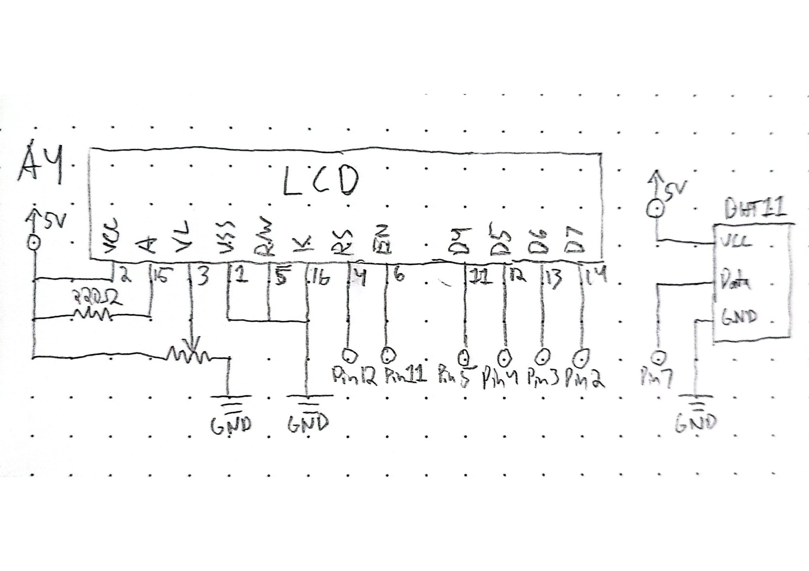
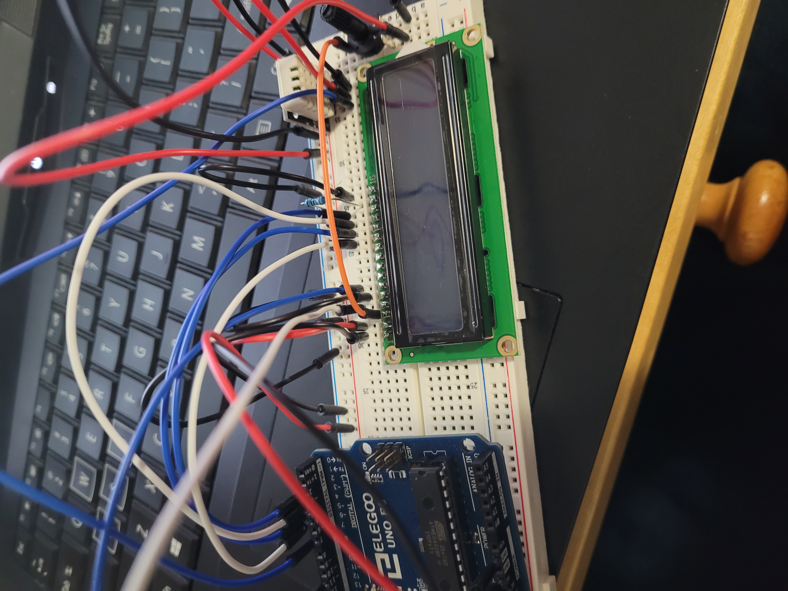
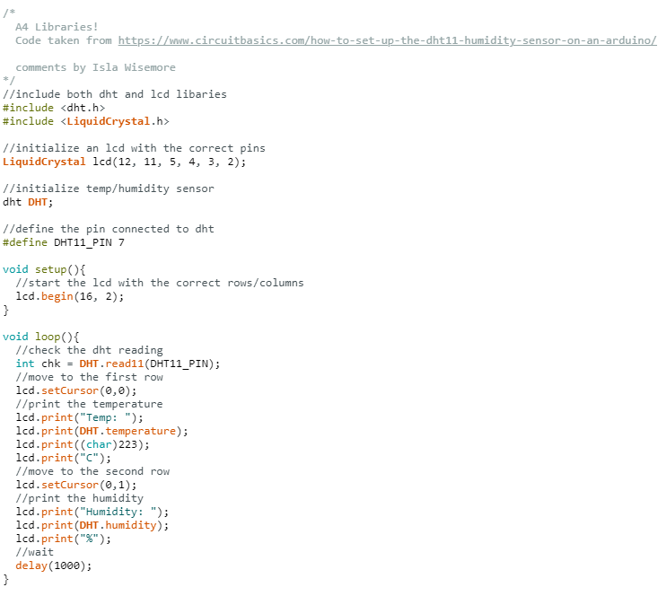

Isla's Assignment 4!

I used the recommended 220 ohm resistor because I
didn't want the backlight to be too bright.

Blue and white wires go to arduino inputs, alternating
so I can keep track of them. Orange goes from the
potentiometer to the lcd. Red is power and black is
ground.


The display shows the temperature and humidity
measured by the sensor
Here is all the documentation for assignment 4!